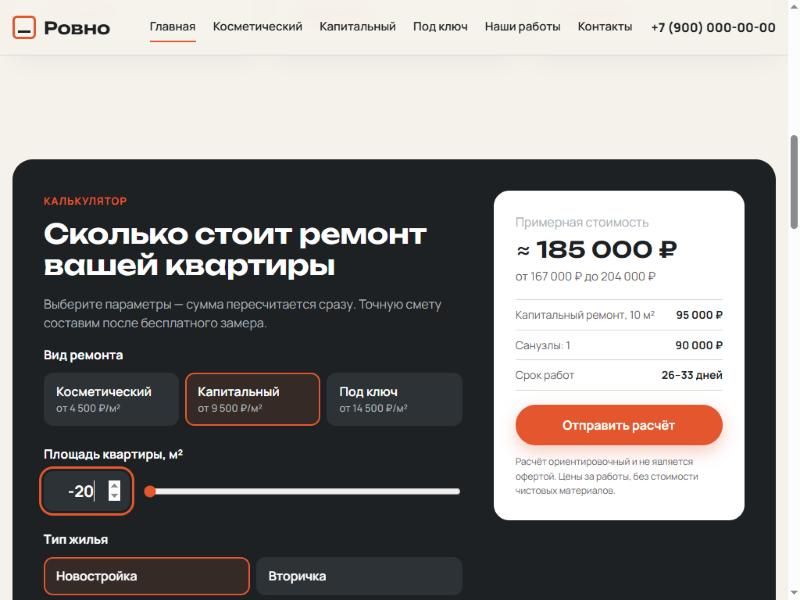
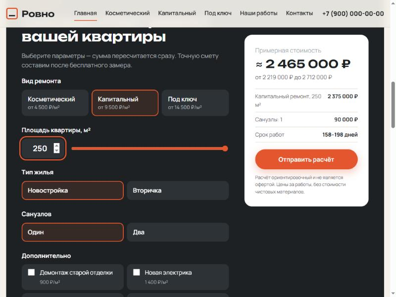
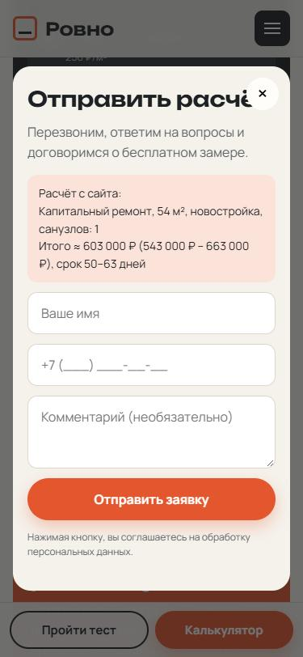
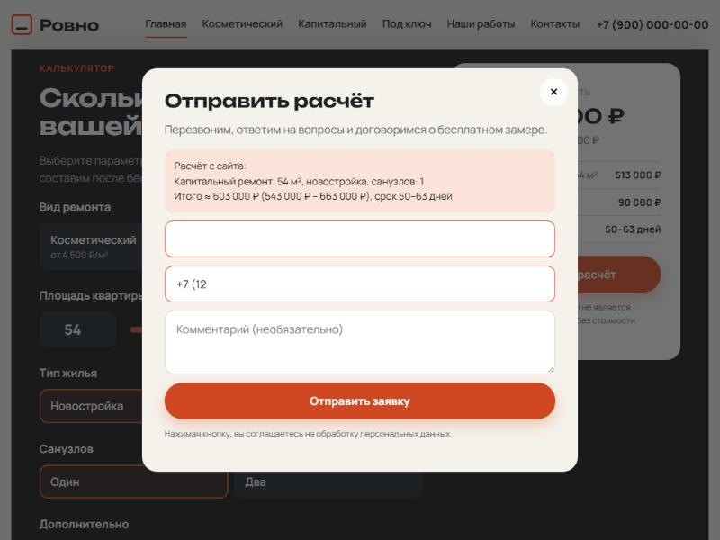
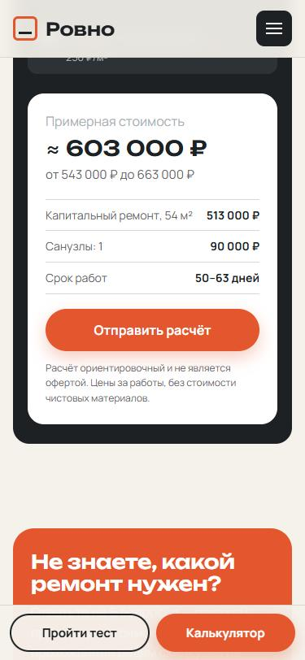
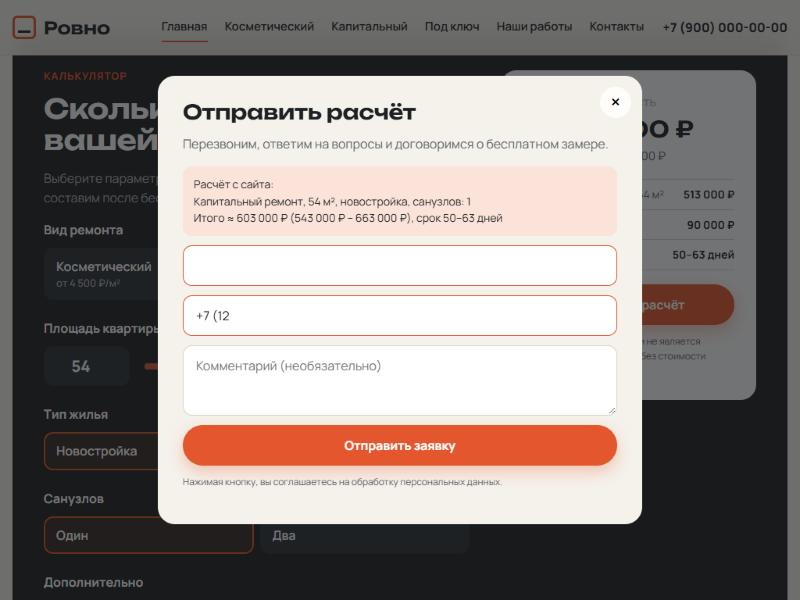

Это учебный пример: проверялся демо-сайт, сделанный нами самими, поэтому заявки можно было отправлять без вреда для чужого бизнеса. Название и адрес сайта скрыты. На реальном проекте отчёт оформляется так же, но охватывает все роли, кабинеты и сценарии из задания.
1. Что проверено
Раздел / сценарий
Компьютер
Телефон
Результат
Главная страница: первый экран, кнопки, меню
да
да
Без ошибок
Меню на телефоне (открыть, перейти, закрыть)
—
да
Без ошибок
Калькулятор: вид ремонта, площадь, тип жилья, санузлы, доп. работы
да
да
Ошибки №1, №2, №5
Калькулятор: ввод неверных значений (0, минус, пусто, слишком много)
да
—
Ошибки №1, №2
Форма «Отправить расчёт»: пустые поля, пробелы, короткий телефон
да
да
Ошибки №3, №4, неудобство №1
Закрытие окна: крестик, клавиша Esc
да
да
Ошибка №4
Горизонтальная прокрутка, наложение блоков на телефоне
—
да
Сдвига вбок нет; ошибка №3
Подвал: контакты, ссылки
да
да
Без ошибок
2. Отчёт об ошибках
№1СредняяКомпьютер · Chrome
Калькулятор принимает отрицательную площадь и молча считает другую
Шаги
Открыть главную страницу, блок «Калькулятор».
В поле «Площадь квартиры» стереть значение и ввести -20.
Посмотреть на итог справа.
Ожидаемо
Поле не даёт ввести минус или сразу подсказывает: «Площадь от 10 до 300 м²», а значение в поле исправляется на 10.
Фактически
В поле остаётся «-20», а итог считается для 10 м² («Капитальный ремонт, 10 м² — 185 000 ₽»). Посетитель видит одно число в поле и другое в расчёте. То же при вводе 0 и 5.

В поле «-20», в расчёте «10 м²»
№2СредняяКомпьютер · Chrome
Поле и ползунок площади имеют разные пределы
Шаги
В калькуляторе ввести площадь 250.
Посмотреть на ползунок рядом с полем.
Ввести площадь 1000.
Ожидаемо
У поля и ползунка один и тот же предел; при выходе за предел появляется понятная подсказка.
Фактически
Поле принимает до 300 м², ползунок — только до 200 м². При 250 ползунок упирается в край, и если его тронуть, площадь сбросится до 200. При 1000 в поле остаётся «1000», а расчёт идёт для 300 м² без предупреждения.

250 м²: ползунок уже в крайней правой точке
№3НизкаяТелефон 375 px · Chrome
На телефоне крестик закрытия перекрывает заголовок формы
Шаги
Открыть сайт на телефоне (ширина 375 px).
В калькуляторе нажать «Отправить расчёт».
Ожидаемо
Заголовок «Отправить расчёт» виден целиком, крестик стоит отдельно.
Фактически
Крестик закрывает последние буквы заголовка. Кроме того, знак «₽» в расчёте переносится на отдельную строку.

«Отправить расчё…» — конец слова под крестиком
№4НизкаяКомпьютер · Chrome
Окно заявки не закрывается клавишей Esc
Шаги
Нажать «Отправить расчёт».
Нажать на клавиатуре Esc.
Ожидаемо
Окно закрывается, как на большинстве сайтов.
Фактически
Окно остаётся открытым, закрыть можно только крестиком.

Окно после нажатия Esc
№5КосметическаяКомпьютер и телефон
Неверное склонение в сроке работ
Шаги
В калькуляторе выбрать «Капитальный», площадь 54 м².
Посмотреть строку «Срок работ».
Ожидаемо
«50–63 дня».
Фактически
«50–63 дней». Так же «26–33 дней» при 10 м². Слово «дней» стоит всегда, без учёта последнего числа.

«50–63 дней» вместо «50–63 дня»
3. Неудобные и непонятные места
1. Форма подсвечивает поля красным, но не говорит, что не так
Если ввести в имя только пробелы, а в телефон две цифры, и нажать «Отправить заявку», поля становятся красными без единого слова. Посетитель не понимает, что именно исправить. Предложение: короткая подпись под полем — «Введите имя», «Номер должен содержать 10 цифр».

Красная рамка без пояснения
2. Неясно, что произошло с введённой площадью
Когда площадь вне пределов, сайт сам подставляет другое число, но ничего не сообщает (см. №1 и №2). Человек может отправить заявку с расчётом не для своей квартиры. Предложение: показывать подсказку «Площадь от 10 до 300 м²» и исправлять число прямо в поле.
3. На узком экране строка «Капитальный ремонт, 250 м²» переносится
Единица «м²» уезжает на следующую строку отдельно от числа. Мелочь, но расчёт читается хуже. Предложение: не разрывать число и единицу.
4. Что не удалось проверить и почему
Доставку заявки до компании: демо-сайт не отправляет данные никуда, проверено только поведение формы.
Safari на iPhone и Mac: физических устройств Apple нет, телефон проверялся в режиме телефона браузера.
В этом коротком примере — только Chrome; в полной проверке добавляются Edge и Firefox.
5. Предложения по улучшению
Сделать одинаковые пределы у поля и ползунка площади и показывать их рядом с полем.
Добавить текстовые подсказки к ошибкам в форме.
Закрывать окна клавишей Esc.
Убрать крестик закрытия из строки заголовка на узких экранах.